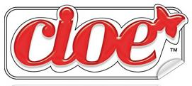

The Daily Meal
Qualcosa di carino sul cibo, project created for the course in Information etc.
Issues
Documentation
Markup
We marked up our articles by adding the class "mention ..." to all elements semantically significant in the context of our issues. We individuated persons, places, organizations or companies, food and components (two of the main themes for our magazine about food), and some specific metadata depending on the issues. Each element was therefore assigned to one or more classes, and to an attribute "about", which we used to collect all elements of the same class or about the same object and linked them to the checkboxes of our metadata panel.
Styles
Medieval Style
To recreate the style of the 15th century manuscript, we chose to take inspiration from several manuscripts decorated with illuminations at that period in Europe. The illuminations on Medieval manuscripts were used to bring emphasis on the text content and pleasant visual support, as well as enhancing the manuscript's value. It could be used to showcase the importance of the person that had commissioned the book, since highly decorated manuscripts costed more, because of the pigments, the gold and the time spent on working on the manuscript.
Fonts
Among the free medieval fonts we found, Hentimps Circlet was the one closest to our images of reference, whereas for the first letter of each paragraph as well as the headings, we used the Mayflower Antique font. Finally, for the metadata panel heading, we used Adine-Kirnberg Regular, to recreate the handwriting of an archivist. Indeed, archivists commonly wrote on the first folio of a manuscript its title, which wasn't necessarily specified in the content, or some additional information such as the estimated date. The reference image taken from the Burgerbibliothek in Bern illustrates it well.

Layout
Taking inspiration from several pictures of illuminated manuscripts from the end of the 15th Century, we recreated the thinner border on the internal side and larger border on the external one (on our website, we would be on the left page of a beautiful illuminated manuscript). The background is an image of a parchment paper.
The titles are centered and in capital red letters; the initial letter of each paragraph alternates between blue and red and the drop cap takes the space of three lines. We chose an interline of 1.2em to respect the ratio found on most of our reference photos. We inserted an image at the beginning of each paragraph, with a rounded top border, to imitate what can be usually found on a double page.

.jpg)


Colors
A lot of the graphical elements for the medieval style were directly taken from images, so we only had to choose colors for the writings and decided to use a brown recalling the ink on the manuscripts, and the red and blue similar to the pigments of the 15th Century.
Bauhaus style
Initially born as a school of art in 1919 in Weimar, the Bauhaus later became an artistic movement based on the merge of arts and crafts. In the treatise written by Mogoly-Nagy for the 1923’s Bauhaus exhibition in Weimar, the features of the new typography are clearly described. The main nature of the new typography is to experience simultaneously the vision of elements and their communication intents. Since communication and legibility are not a priori features of typography aesthetics, the priority is the absolute clarity of whatever will be the typographic composition. The latter may include the use of all linear directions in addition to the horizontal one, colors, type sizes, geometric forms, all to create a flexible and expressive typographical language.
Bauhaus magazines and books were often written in sans-serif fonts, the text often justified fills the columns with larger spaces between words and characters. Furthermore, there was more contrast between different text dimensions, to establish a visual hierarchy: lines, bars, circles, and squares were used to divide the space and guide the viewer across the composition. Finally, they often used elementary shapes harmonically balanced and few colors where black is always present.
Fonts
In the 20s the Bauhaus typographers published: We write everything in lower case to have time, and besides, why two alphabets, were one will do? why use capital letters if we don't use them when we speak? The Bauhaus decided to represent the logic of the new industrial deleting the capital letters and any kind of grazie from characters. The new typographical standard was based on a new functional font, free from restrictions and conventions, created by Herbert Bayer in 1925, and commissioned by Walter Gropius. The result was an idealist typeface called “Universal”, a geometric sans-serif font representing the idea of a shape that follows its specific function, observing the main Bauhaus principles. We found a similar font called “Bauhaus”, used for the titles, nav, and subtitles. For the text of the articles We chose the “Futura” typeface: projected by Paul Renner in 1927, it is a linear font coming from Bauhaus principles such as constructivism and compositional balance.


Layout
We found inspiration from these official Bauhaus manifestos, advertising, books and journals that Monoskop made available to freely download. We report the ones that mostly inspired us in the rendering. For the header, we used the CSS grid to create a kind of book cover that would fill 100% of the viewport, similar to a book to flip through to see the content. The elements in the header include some of the more used geometrical shapes by the Bauhaus. The text of the article is readable through one column because the effect of the container’s division already provides a journalistic perception, enriched by some black borders among the paragraphs, usually used in the Bauhaus’s layout to divide elements and photos. Finally, the images have the shape of circles, such as in the source reported below.


Colors
The colors used observe the palette used by the art school: the primary colors, even if declined as they appear in the original sources, plus white and black, always present. The background of the body aims to give the perception of a faded magazine of the XIX century, the most similar We found from the journals and books mentioned above. The color aims also to give a neutral background to the colors used in the header.
Pop Art style
Pop Art is an artistic movement born during the mid- to late- 1950s in the United Kingdom and the United States, then spread in Europe during the 1960s. This Popular Style is inspired by concrete representations of the mass culture, such as comic books, advertising, and mundane mass-produced objects. Since Pop Art was heavily influenced by the comic style, We decided to take as a reference point the artist that during this period used the comics as a source of imagery and inspiration more than any other: Roy Lichtenstein. We wanted to recreate a comic observing the painter’s style and exaggeration elements: only primary and eye-catching colours are used, no shadows are included, no blending apart from the ben-day dots employed to create subtle colors differences in comics, the use of heavy black outline, and the integration of text into the image where sentences sometimes go out from the margins.
Fonts
The font used in Lichtenstein’s bubbled speeches is the Std Regular. Since the font costs 20$ on the web, Fontspring suggested some similar alternatives: We chose the P22 Pop Art Comic Regular and the P22 Pop Art Comic Bold Italic for the text and subtitles respectively. For the titles and blockquotes, We wanted a similar font to the one present in “POW” by the artist. We found BadaBoom BB as a good alternative, also in line with the Comic Style.

Layout
We created a header that could be similar to a comic heading like the one in Captain America's cover, just to present the journal. In this context, the colors are the same used in the “POW” work in terms of chromatic levels, enriched by the clouds’ border, recurrent element both in Lichtenstein paintings and American comics of the 60s. According to the comics schema for narration, we tried to reconstruct the perception of block’s reading through the division of each paragraph into two columns. The white container in which the articles are included aims to create some margins between the paper area and the live area as the sources show, same as of the images with the text, represented with margins and heavy black outline. Some parts of the articles -such as blockquotes or images captions- are represented as they were part of speeches into round white containers, while the subtitles are marked by rectangular yellow shapes, as the above text in “Takka Takka”. Here are the comic sources that we used as a reference and that maybe inspired Lichtenstein in his following works’ creation.


{kind=link}


Colors
We tried to observe both the Lichtenstein style and the colors of the comics of that time, balancing them to enable legibility and to give a perception of advertising, exaggeration and vivacity.
Here are the most inspirational art works from which we extracted the chosen chromatic range:


1990s style: Cioè magazine
For the style about the last decades of XX century we thought of reproducing the typographical choices of Cioè, a famous Italian teen magazine, still in print nowadays. It had its biggest spread during the eighties and nineties and is a weekly magazine published in Italy since October 7th, 1980, currently published by Edizioni Panini. The magazine is aimed mainly at adolescent and pre-adolescent audience and deals with issues related to fashion, music, cinema, gossip, love and sexuality. It is printed in a small format and is characterized by really colored articles and front pages. It came usually with attached gift posters of famous people. Here are some images that we used for taking inspiration on the layout.
Cover page
For the home page we decided to create a cover that followed this really colored style with superposing images of people of different dimensions over a geometric background and the same style was adopted with images of us for the page of the carousel devoted to the team.
Layout

In the Journal page each article was divided into two columns for recreating the format of the magazine: each "p" tag was split in order to make it more readable and to avoid re-scrolling all over the page. We added rotated images decorated with a colored border and a lot of different containers of various colors for imitating the bustling flow of the content inside the page, scanned by different boxes with additional content. Every first letter of the paragraphs was enlarged and colored with fuchsia as the explicative image shows and the border of the journal page colored with a lizard green.
Colors
The idea was to remain mostly focused on the example palette of colors inside the images. Here the colors mostly used for this style.
Fonts
Trying to be as consistent as possible we also got in touch with the social media manager of the current magazine, trying to ask for some information on the archive of the 90s due to the lack of images of the journal pages and the related fonts. They answered providing some of the used typographic fonts at the time and explained also that the logo was designed specifically by one of the graphics at the beginning and that wasn’t inspired on any existent font.
The decision for the logo of our journal was to use one of the most similar one and using some shadow to give it the double border of the original one. The font used for the title of the cover page is Hidden Cocktails Italic Shadow. Concerning the provided list of fonts we decided to use the Helvetica font, because it was the only one also close visually with the reference image we had to work on. The cited one in fact were: Mistral, Futura, Futura Extra Bold, Helvetica, Helvetica Compressed, Helvetica Cond Bold Obliq and Rundfunk. For some uppercase titles and for the navbar I decided to use Rampart One which was the most similar for title such as the one of the Spice girls in the cover, because of the borders and the style of the font itself.
Navbar
For the navbar buttons the idea was to replicate the rounded yellow rectangle of the cover page for each of the buttons, in order to render the magazine identity and make it more recognizable both on the issues and on the cover page.
Team

Card title
This is a wider card with supporting text below as a natural lead-in to additional content. This content is a little bit longer.

Card title
This card has supporting text below as a natural lead-in to additional content.
Card title
This is a wider card with supporting text below as a natural lead-in to additional content. This card has even longer content than the first to show that equal height action.